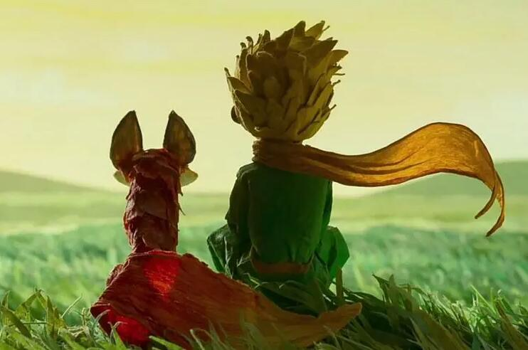

《小王子》是法国作家安托万·德·圣-埃克苏佩里于1942年写成的著名儿童文学短篇小说。本书的主人公是来自外星球的小王子。书中以一位飞行员作为故事叙述者，讲述了小王子从自己星球出发前往地球的过程中，所经历的各种历险。作者以小王子的孩子式的眼光，透视出成人的空虚、盲目，愚妄和死板教条，用浅显天真的语言写出了人类的孤独寂寞、没有根基随风流浪的命运。同时，也表达出作者对金钱关系的批判，对真善美的讴歌。
2020年4月，列入《教育部基础教育课程教材发展中心 中小学生阅读指导目录（2020年版）》。
2020年4月，列入《教育部基础教育课程教材发展中心 中小学生阅读指导目录（2020年版）》。